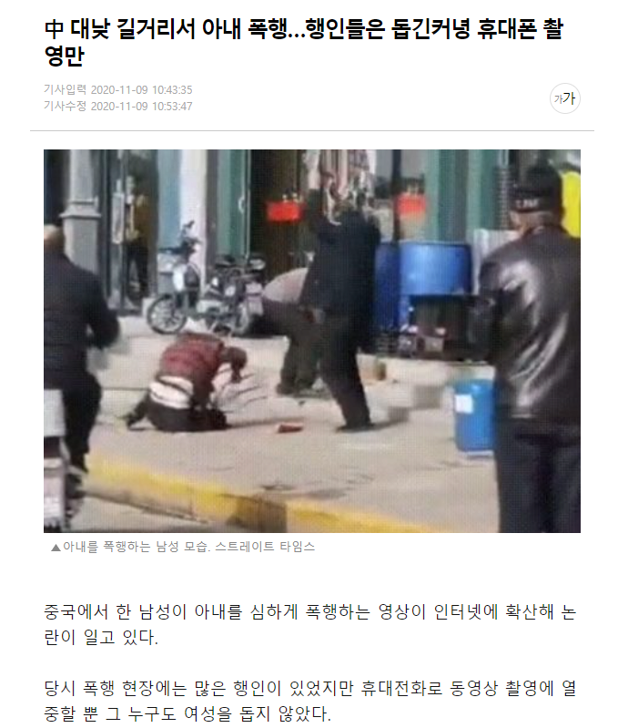
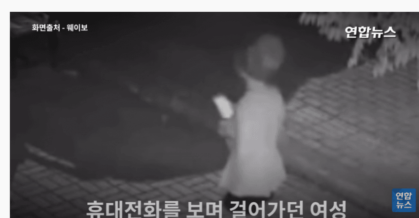
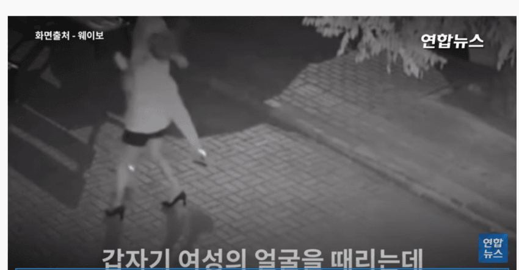
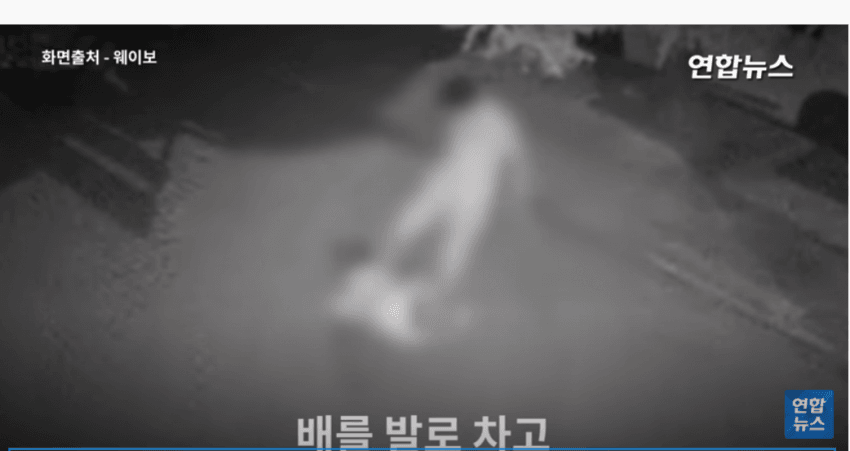
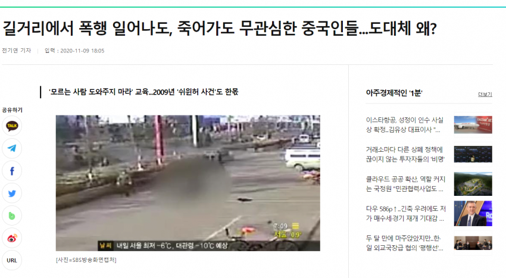
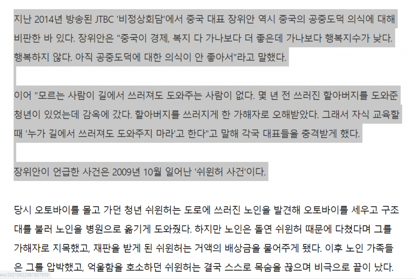

실제로 중국은 길거리서 여자가 맞아도 아이가 고통에 빠져도 도와주는 경우가 거의 없음
때리는 남자가 무서워서 그런것도 아니더라
그냥 평범한 체격이었음
가장 큰 원인은 공권력에 대한 불신이라고 해.
법과 원칙 보다는 일당 독재라서 연줄이 통화는 사회라서 길거리에서 대놓고 여자 패는 남자면
윗대가리랑 연줄 있는거 아닌가 생각이 들어서 괜히 엮이면 피해 볼수 있다고 생각이 든다고 함
보통 남을 돕지 않는게 기본이라고함 (의외로 길거리서 가장 사람 많이 돕는 아시아 국가는 일본 이라고함
난 이게 한국의 미래라고 생각하는데;;